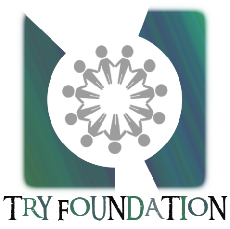
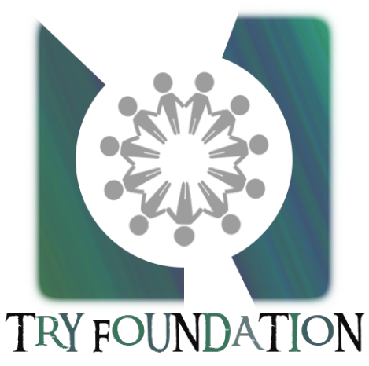
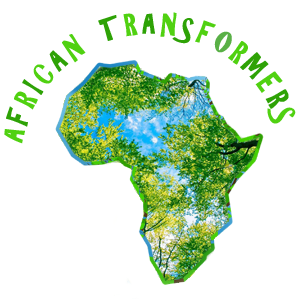
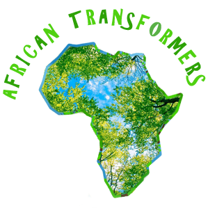
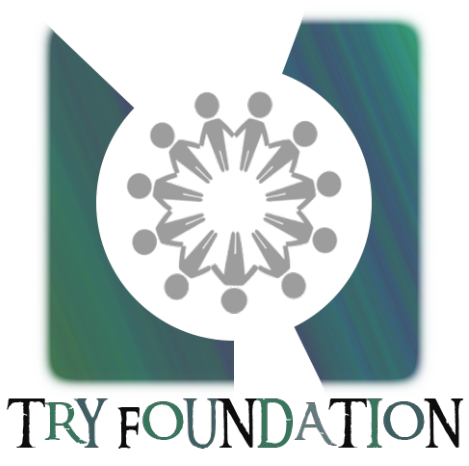
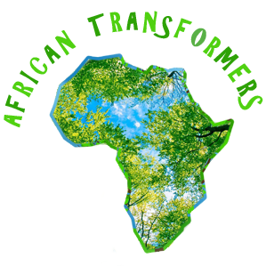

Graphic Designs
 

 

BSc. Computer Science | Ashesi University Alum | Baobab Ambassador | Web Developer | InfoSec Enthusiast | Budding Musician | Graphic Designer 😃
I am a young and passionate Malawian who believes in the African potential to catalyze technology across its borders.
I look forward to making a positive contribution towards the adoption, utilization and development of technologies that seek to ease the way in which tasks are accomplished; efficiently and effectively. I have a keen interest in Web Technologies and Cloud Computing, Social Computing, Information Architecture, and User Experience Design. I also love music and graphic design.
I received a 4-year scholarship from the MasterCard Foundation Scholars Program to study Computer Science at Ashesi University, Ghana. Throughout my years at Ashesi University, apart from academics, I was actively involved in various activities, including give-back community programs and problem-solving activities.
An all-boys boarding school where I did my 4 years of secondary education, privileged to have served on the prefectural body as the Secretary during the 2013-2014 academic year. A position that equipped me with the necessary leadership and communication skills essential in fostering desired change.
A budding gospel musician who has recorded about 16 songs so far available on SoundCloud.
I am passionate about technology and love helping people with their tech-related problems.
I believe that everybody is a design thinker and therefore, I try to make others realize it too.
• Provided user experience, technology, and data support to the Baobab team in improving the platform.
• Tested new features added to the Baobab application as part of its upgrade in mitigating reported issues.
• Developed and curated creative online content, which significantly increased user patronage of the platform.
• Conducted a website audit on client’s websites to evaluate whether the site met the desired benchmarks.
• Fully designed and developed a company website and co-developed another website for another company.
• Provided Information Technology related advice for companies to significantly improve their online presence.
• Conducted research and collected contact details for over 500 companies in creating a clientele database.
• Assisted with the printing of business and ID cards for customers who needed these cards in their offices.
• Improved company’s efficiency rate by 20% by assisting in devising a lasting potent office operation plan.

